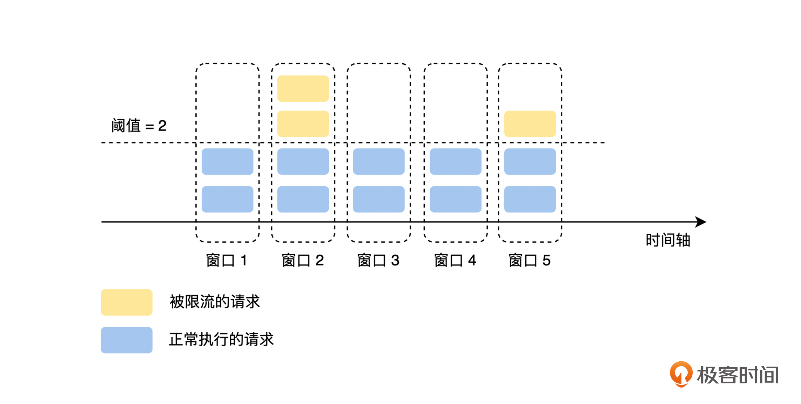
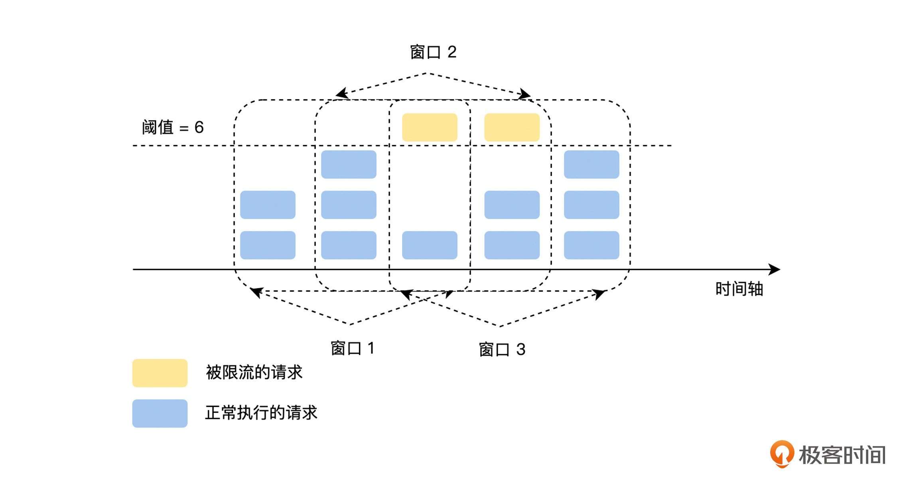
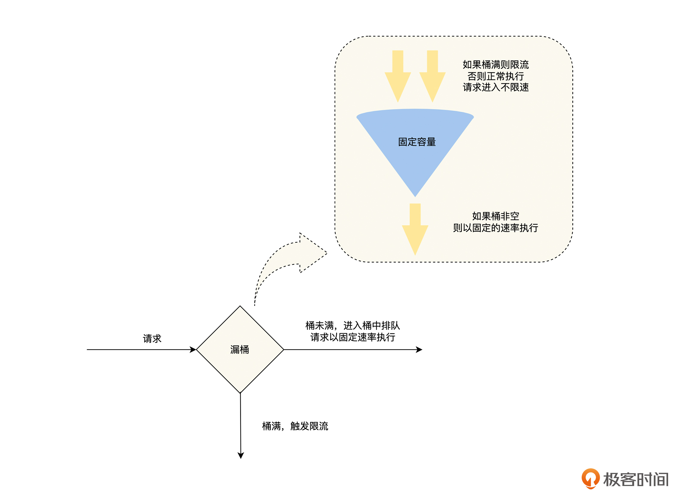
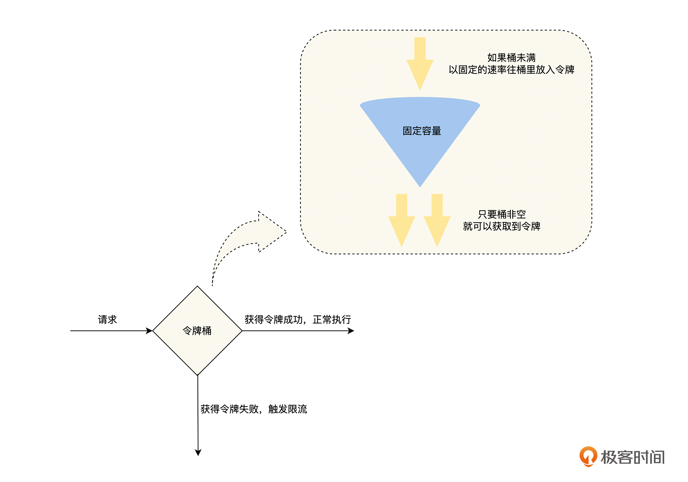

- 00 开篇词 掌握好学习路径，分布式系统原来如此简单.md.html
- 01 导读：以前因后果为脉络，串起网状知识体系.md.html
- 02 新的挑战：分布式系统是银弹吗？我看未必！.md.html
- 03 CAP 理论：分布式场景下我们真的只能三选二吗？.md.html
- 04 注册发现： AP 系统和 CP 系统哪个更合适？.md.html
- 05 负载均衡：从状态的角度重新思考负载均衡.md.html
- 06 配置中心：如何确保配置的强一致性呢？.md.html
- 07 分布式锁：所有的分布式锁都是错误的？.md.html
- 08 重试幂等：让程序 Exactly-once 很难吗？.md.html
- 09 雪崩（一）：熔断，让故障自适应地恢复.md.html
- 10 雪崩（二）：限流，抛弃超过设计容量的请求.md.html
- 11 雪崩（三）：降级，无奈的丢车保帅之举.md.html
- 12 雪崩（四）：扩容，没有用钱解决不了的问题.md.html
- 13 可观测性（一）：如何监控一个复杂的分布式系统？.md.html
- 14 可观测性（二）：如何设计一个高效的告警系统？.md.html
- 15 故障（一）：预案管理竟然能让被动故障自动恢复？.md.html
- 16 故障（二）：变更管理，解决主动故障的高效思维方式.md.html
- 17 分片（一）：如何选择最适合的水平分片方式？.md.html
- 18 分片（二）：垂直分片和混合分片的 trade-off.md.html
- 19 复制（一）：主从复制从副本的数据可以读吗？.md.html
- 20 复制（二）：多主复制的多主副本同时修改了怎么办？.md.html
- 21 复制（三）：最早的数据复制方式竟然是无主复制？.md.html
- 22 事务（一）：一致性，事务的集大成者.md.html
- 23 事务（二）：原子性，对应用层提供的完美抽象.md.html
- 24 事务（三）：隔离性，正确与性能之间权衡的艺术.md.html
- 25 事务（四）：持久性，吃一碗粉就付一碗粉的钱.md.html
- 26 一致性与共识（一）：数据一致性都有哪些级别？.md.html
- 27 一致性与共识（二）：它们是鸡生蛋还是蛋生鸡？.md.html
- 28 一致性与共识（三）：共识与事务之间道不明的关系.md.html
- 29 分布式计算技术的发展史：从单进程服务到 Service Mesh.md.html
- 30 分布式存储技术的发展史：从 ACID 到 NewSQL.md.html
- 春节加餐 技术债如房贷，是否借贷怎样取舍？.md.html
- 春节加餐 深入聊一聊计算机系统的时间.md.html
- 春节加餐 系统性思维，高效学习和工作的利器.md.html
- 结束语 在分布式技术的大潮流中自由冲浪吧！.md.html
- 捐赠
10 雪崩（二）：限流，抛弃超过设计容量的请求
你好，我是陈现麟。
通过上一节课的学习，我们了解了因为局部故障的正反馈循环而导致的雪崩，可以通过熔断来阻断，这样我们就为极客时间的后端系统，加上了熔断这一根保险丝，再也不用担心小故障被放大成一个全局的故障了，这让极客时间的后端系统，在稳定性上又向前跨进了一大步。
但是有的时候，我们明明知道一个服务的最高处理能力为 10 w QPS ，并且我们也知道这一次活动，这个服务的请求会超过 10 w QPS 。这个时候，如果只有熔断机制，我们就需要等待服务由于过载出现故障后触发熔断，然后再恢复正常，那么系统就是在被动地应对服务请求过载的问题。
其实这是一个典型的限流场景，那么，我们应该如何优雅地处理这个问题呢？在这节课中，我们将一起讨论，保障分布式系统稳定性的另一个方法——限流，从限流的原因入手，分析如何实现限流，再一起讨论限流机制要注意的关键问题，从这三个方面来分析，如何通过限流机制主动处理服务流程过载。
为什么需要限流
限流和熔断是经常一起出现的两个概念，都是用来解决服务过载问题的，那么在有了熔断机制后，为什么还需要限流呢？我认为主要有以下几个方面的原因。
首先，熔断的处理方式不够优雅。回到课程开始的例子，虽然在服务过载的时候，熔断可以避免雪崩的发生，但是熔断机制是被动感知故障，然后再进行处理的，它需要先让过载发生，等系统出现故障后，才会介入处理，让系统恢复到正常。
这样的处理方式会让系统产生不必要的抖动，如果是处理意料之外的过载问题，我们是可以接受的。但是，在明知道服务的服务能力的情况下，依然让故障发生，然后在事后进行被动处理，这个处理思路就不够优雅了。
其次，熔断机制是最后底线。虽然熔断可以解决雪崩问题，但是它应该作为系统稳定性保障的最后一道防线，我们没有必要时刻把它亮出来。正确使用熔断的思路应该是，在其他方法用尽之后，如果过载问题依旧存在，这时熔断才会被动触发。
所以，我们的系统虽然有熔断机制，保障雪崩不会出现，但是当熔断出现的时候，依然代表着我们的系统已经失控了。我们需要更主动地解决问题，防患于未然，而限流就可以达到这个目的。
再次，在快速失败的时候，需要能考虑调用方的重要程度。熔断是调用方依据响应结果自适应来触发的，在被调用方出现过载的时候，所有的调用方都将受到影响。但是很多时候，不同调用方的重要程度是不一样的，比如同样是查询用户信息的接口，在用户详情页面调用这个接口的重要程度，会高于评论列表页面，如果查询用户信息的接口出现过载了，我们要优先保障用户详情页面的调用是正常的。
最后，在多租户的情况下，不能让一个租户的问题影响到其他的租户，我们需要对每一个租户分配一定的配额，谁超过了就对谁进行限流，保证租户之间的隔离性。
如何实现限流
通过上面的讨论，我们了解到限流机制是熔断等其他机制无法替代的，是必须的，那么我们该如何实现限流机制呢？这里我们先介绍一下常见的限流算法，然后讨论单节点限流机制需要注意的问题，最后再讨论分布式场景下限流机制的权衡。
限流算法
限流算法是限流机制的基础和核心，并且后续关于限流机制的讨论，都会涉及相关的限流算法，所以我们先介绍最常用的四个限流算法：固定窗口、滑动窗口、漏桶和令牌桶算法，把它们两两结合来进行分析。
固定窗口和滑动窗口
固定窗口就是定义一个“固定”的统计周期，比如 10 秒、30 秒或者 1 分钟，然后在每个周期里，统计当前周期中被接收到的请求数量，经过计数器累加后，如果超过设定的阈值就触发限流，直到进入下一个周期后，计数器清零，流量接收再恢复正常状态，如下图所示。- 
假设我们现在设置的是 2 秒内不能超过 100 次请求，但是因为流量的进入往往都不是均匀的，所以固定窗口会出现以下两个问题。
第一，抗抖动性差。由于流量突增使请求超过预期，导致流量可能在一个统计周期的前 10 ms 内就达到了 100 次，给服务的处理能力造成一定压力，同时后面的 1990 ms 将会触发限流。这个问题虽然可以通过减小统计周期来改善，但是因为统计周期变小，每个周期的阈值也会变小，一个小的流量抖动就会导致限流的发生，所以系统的抗抖动能力就变得更差了。
第二，如果上一个统计周期的流量集中在最后 10 ms ，而现在这个统计周期的流量集中在前 10 ms ，那么这 20 ms 的时间内会出现 200 次调用，这就超过了我们预期的 2 秒内不能超过 100 次请求的目的了。这时候，我们就需要使用“滑动窗口”算法来改善这个问题了。
其实，滑动窗口就是固定窗口的优化，它对固定窗口做了进一步切分，将统计周期的粒度切分得更细，比如 1 分钟的固定窗口，切分为 60 个 1 秒的滑动窗口，然后统计的时间范围随着时间的推移同步后移，如下图所示。- 
但是这里要注意一个问题，如果滑动窗口的统计窗口切分得过细，会增加系统性能和资源损耗的压力。同时，滑动窗口和固定窗口一样面临抗抖动性差的问题，“漏桶”算法可以进一步改进它们的问题。
漏桶和令牌桶
我们可以在图中看到，“漏桶”就像一个漏斗，进来的水量就像访问流量一样，而出去的水量就像是我们的系统处理请求一样。当访问流量过大时，这个漏斗中就会积水，如果水太多了就会溢出。

相对于滑动窗口和固定窗口来说，漏桶有两个改进点，第一，增加了一个桶来缓存请求，在流量突增的时候，可以先缓存起来，直到超过桶的容量才触发限流；第二，对出口的流量上限做了限制，使上游流量的抖动不会扩散到下游服务。这两个改进大大提高了系统的抗抖动能力，使漏桶有了流量整形的能力。
但是，漏桶提供流量整形能力有一定的代价，超过漏桶流出速率的请求，需要先在漏桶中排队等待，其中流出速率是漏桶限流的防线，一般会设置得相对保守，可是这样就无法完全利用系统的性能，就增加了请求的排队时间。
那么从资源利用率的角度来讲，有没有更好的限流方式呢？我们可以继续看下面介绍的“令牌桶”算法。
如图，我们可以看到，令牌桶算法的核心是固定“进口”速率，限流器在一个一定容量的桶内，按照一定的速率放入 Token ，然后在处理程序去处理请求的时候，需要拿到 Token 才能处理；如果拿不到，就进行限流。因此，当大量的流量进入时，只要令牌的生成速度大于等于请求被处理的速度，那么此时系统处理能力就是极限的。

根据漏桶和令牌桶的特点，我们可以看出，这两种算法都有一个“恒定”的速率和“可变”的速率。令牌桶以“恒定”的速率生产令牌，但是请求获取令牌的速率是“可变”的，桶里只要有令牌就直接发，令牌没了就触发限流；而漏桶只要桶非空，就以“恒定”的速率处理请求，但是请求流入桶的速率是“可变”的，只要桶还有容量，就可以流入，桶满了就触发限流。
这里我们也需要注意到，“令牌桶”算法相对于“漏桶”，虽然提高了系统的资源利用率，但是却放弃了一定的流量整形能力，也就是当请求流量突增的时候，上游流量的抖动可能会扩散到下游服务。
所以，计算机的世界没有银弹，一个方案总是有得必有失，一般来说折中的方案可能是使用最广泛的，这就是没有完美的架构，只有完美的 trade-off 的原因。
单节点限流
由于只有一个节点，不需要和其他的节点共享限流的状态信息，所以单节点限流的实现是比较简单的，我们可以基于内存来实现限流算法，让需要限流的请求先经历一遍限流算法，由限流算法来决定是正常执行，还是触发限流，这里需要注意两个问题。
首先，限流机制作用的位置是客户端还是服务端，即选择客户端限流还是服务端限流。一般来说，熔断机制作用的位置是客户端，限流机制作用的位置更多是服务端，因为熔断更强调自适应，让作用点分散在客户端是没有问题的，而限流机制则更强调控制，它的作用点在服务端的控制能力会更强。
但是，将作用点放置在服务端，会给服务端带来性能压力。如果将作用点放置在客户端，这就是一个天然的分布式模式，每一个调用方的客户端执行自己的限流逻辑，这部分我们会在下面的分布式限流中继续讨论。而将作用点放置在服务端时，服务端要执行所有请求的限流逻辑，就需要更多的内存来缓存请求，以及更多的 CPU 来执行限流逻辑。
我们可以考虑的一个策略是，在客户端实现限流策略的底线，比如，一个客户端对一个接口的调用不能超过 10000 并发，这是一个正常情况下完全不会达到的阈值，如果超过就进行客户端限流，避免客户端的异常流量对服务端造成压力。同时，因为这是一个非常粗粒度的阈值，设置好默认值后，几乎不会去修改，所以就缓解了客户端限流带来的阈值管理问题，之后就可以在服务端实现更精细和复杂的限流机制了。
其次，如果触发限流后，我们应该直接抛弃请求还是阻塞等待，即否决式限流和阻塞式限流。一般来说，如果我们可以控制流量产生的速率，那么阻塞式限流就是一个更好的选择，因为它既可以实现限流的目的，又不会抛弃请求；如果我们不能控制流量产生的速率，那么阻塞式限流将会因为请求积压，出现大量系统资源占用的情况，很容易引发雪崩，这时否决式限流将是更好的选择。
所以，对于在线业务的服务端场景来说，服务之间相互调用的请求流量主要是用户行为产生的，不论是客户端限流还是服务端限流，限流的作用点都处于流量的接收方，因为接收方不能控制流量产生的速率，所以超出阈值后通常直接丢弃，进行否决式限流。
而对于像消费 MQ 消息或者发送 Push 时，为了避免打挂所依赖的下游服务，我们可以通过对 MQ 消费或者发送 Push 的行为进行限速，来控制流量产生的速率，在这种情况下，如果超出阈值了，我们一般选择阻塞等待，进行阻塞式限流。
分布式限流
讨论完单节点限流后，我们还需要重点关注分布式限流，即为了系统高可用，每一个服务都会运行多个实例，所以我们在对某一服务进行限流的时候，就需要协调该服务的多个实例，统一进行限流。因为上文中对于单节点限流讨论的问题，在分布式限流场景同样适用，这里就不再赘述了。下面我们主要来讨论，在实现分布式场景下，如何来协同多个节点进行统一的限流。
首先，最容易想到的一个方案是进行集中式限流。单节点限流是在进程内的内存中实现限流器的，而对于分布式限流来说，我们可以借助一个外部存储来实现限流器，比如 Redis 。在分布式限流的场景下，我们一般选择令牌桶算法，但是这个方法的缺点是，每一次请求都需要先访问外部的限流器获取令牌，这将带来三个问题。
第一，限流器会成为系统的性能瓶颈，如果在系统的 QPS 非常高的情况下，限流器的压力是非常大的。虽然我们可以将请求，通过 Hash 策略扩展到多个限流器实例上，但是这也增加了系统的复杂性。复杂性是系统架构最大的敌人，我们一定要保持敏感。
第二，限流器的故障将会影响所有接入限流器的服务。不过，我们可以在限流器故障的情况下，进行降级处理，例如，如果服务访问限流器获取令牌出现了错误时，可以降级为直接进行调用，而不是抛弃请求。
第三，增加了调用的时延。每一次调用前，都需要先通过网络访问一次限流器，这是一个毫秒级别的时延。
其次，另一个方案是将分布式限流进行本地化处理。限流器在获得一个服务限额的总阈值后，将这个总阈值按一定的策略分配给服务的实例，每一个实例依据分配的阈值进行单节点限流。这里要注意的是，如果服务实例的性能不一样，在负载均衡层面，我们会考虑性能差异进行流量分配。在限流层面，我们也需要考虑这个问题，性能不同的实例，限流的阈值也不一样，性能好的节点，限流的阈值会更高。
但是，这个方式也有一个问题，该模式的分配比例模型，是依据统计意义来进行分配的，而现实中，具体到一个限流策略上，它的精确性可能会出现问题。比如有两个实例的服务，对一个用户限流为 10 QPS ，假设这两个实例的性能相同，每个实例限流的阈值为 5 QPS ，但是如果这个用户的流量，都被路由到其中的一个实例上，这就会导致该用户的流量，在 5 QPS 的时候就触发了限流，和我们的设计预期不一致了。
最后，我们来讨论一个折中的方案，这个方案建立在集中式限流的基础上，为了解决每次请求都需要，通过网络访问限流器获取令牌的问题，客户端只有在令牌数不足时，才会通过限流器获取令牌，并且一次获取一批令牌。这个方案的令牌是由集中式限流器来生成的，但是具体限流是在本地化处理的，所以在限流的性能和精确性之间，就有了一个比较好的平衡。
限流机制的关键问题
了解完限流的实现原理之后，我们就知道如何去实现一个限流器了，但是，在限流器实际落地的过程中，我们需要去配置限流的阈值，同时还要确保系统，不会因为触发了不必要的限流而导致故障，所以我们还需要思考下面两个关键问题。
如何确定限流的阈值
当我们对服务进行限流的时候，首先要面临的第一个问题是，确定服务触发限流的阈值。
一个最简单的方案是，根据经验设置一个比较保守，并且满足系统负载要求的阈值，在之后的使用中慢慢进行调整。但是这个方案会出现一个问题，我们预测的限流阈值不够准确，甚至会出现比较大的偏差，对于限流的阈值来说，不论过高还是过低都会出现问题，阈值过高则限流不会起作用，阈值过低则无法发挥出服务的性能。
另外，我们可以通过压力测试来决定限流的阈值。但是，压测的环境很难和线上环境保持一致，特别是在涉及缓存和存储的情况下，并且单个接口的压力测试不能反映出，正常运行情况下系统的状态。虽然全链路压测可以通过流量回放，一定程度上模拟线上真实流量的比例，但是它也只是用历史的流量比例来预测未来，并且这个工作量是非常大的。
同时，我们的系统在一个持续的迭代过程中，系统的性能可能会随着迭代而发生变化，所以限流的阈值设置好之后，还需要付出一定的维护成本。
限流可能会引入脆弱性
我们引入限流，本来是为了提高系统的稳定性，达到“反脆弱”的目的，但是，如果我们在分布式系统的复杂拓扑调用中，遍布限流功能，那么以后对每个服务的扩容，新功能的上线，以及调用拓扑结构的变更，就都有可能会导致局部服务流量的骤增，从而引发限流使业务有损。所以，限流可能会引入脆弱性，这是一个很值得讨论的问题。
限流机制的“反脆弱”也有可能会导致“脆弱”的出现，它的本质原因是，在限流的阈值设置后，我们很难适应调用拓扑、机器性能等等的变化，但是，在熔断的阈值里是可以自适应这些变化的，也就没有这个问题了。
所以，当我们决定对系统进行大规模限流设置时，需要谨慎地审视系统的限流能力和成熟度，判断它们是否能支撑起如此大规模的应用。
最后，通过这两个讨论，我认为使用限流机制比较好的一个方式是，在系统的核心链路和核心服务上，默认启用限流机制，比如，像网关这样的流量入口和账号这样的核心服务，不论是限流阈值的设定，还是脆弱性的判断，我们都可以通过减少限流引入的范围，来简化使用限流的复杂度；而对于其他的位置和服务，则默认不启用限流机制，在出现故障的时候，通过手动设置阈值再启用，把它作为处理系统故障的一个手段。
总结
到这里，我们一起讨论了需要限流机制的原因，限流机制的算法、实现原理以及关键问题，下面一起来总结一下这节课的主要内容。
通过了解有了熔断之后，还需要限流机制的原因，你在后续的工作中，如果碰到这样的限流场景，就可以引入限流机制了。
另外，在掌握了限流的算法、单节点限流和分布式限流的技术原理之后，你就可以为你现在的系统实现一个限流器了。
最后，我们从限流机制的关键问题：限流阈值的设置和引入的脆弱性中，得出在核心链路和核心服务上，默认启用限流机制，在其他位置上，手动启用限流机制，把它作为处理系统故障的一个手段。
思考题
在日常工作中，你在哪些场景会选择漏桶，哪些场景会选择令牌桶呢？欢迎你举例来分享。
欢迎你在留言区发表你的看法。如果这节课对你有帮助，也推荐你分享给更多的同事、朋友。
© 2019 - 2023 Liangliang Lee. Powered by gin and hexo-theme-book.